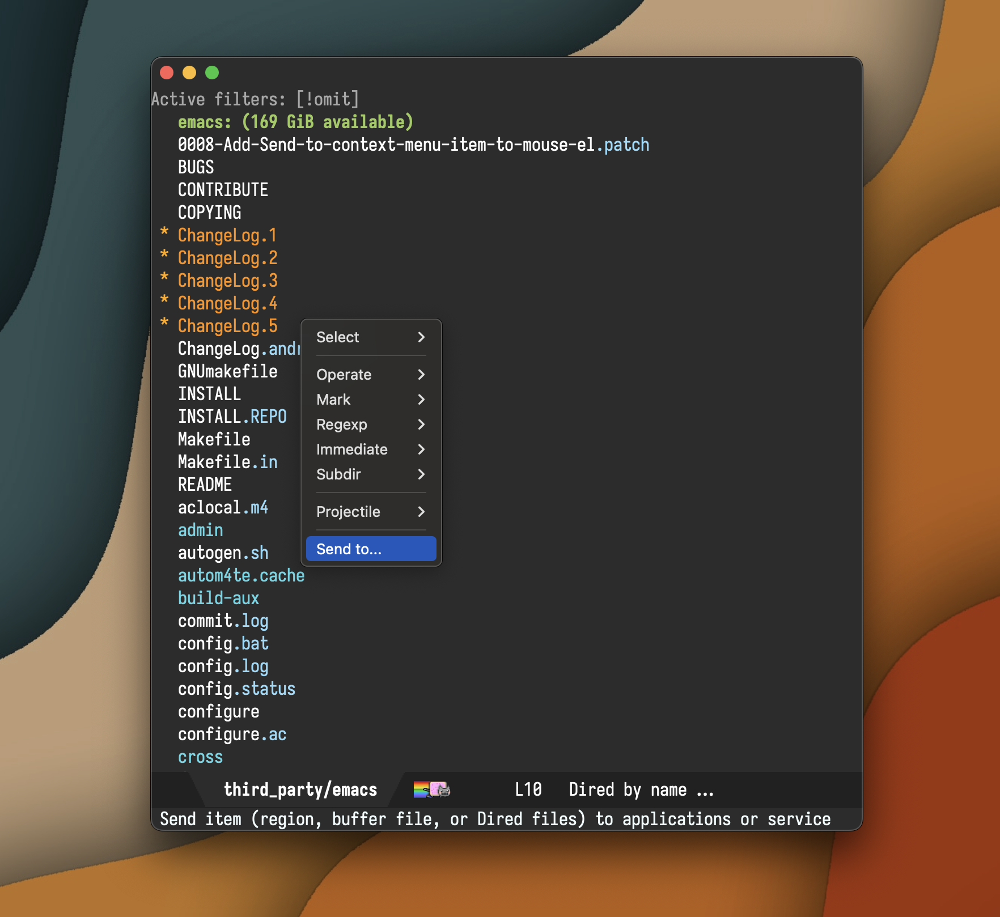
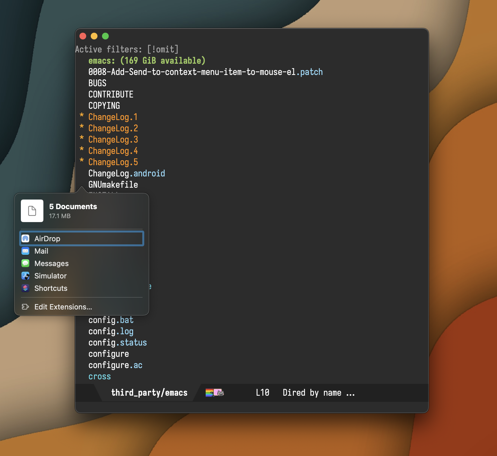

Álvaro Ramírez
Emacs send-to (aka macOS sharing) merged upstream
Back in February, I asked folks on the Fediverse if I should try to contribute native macOS sharing to Emacs upstream. While folks were keen on the sharing feature, there were reservations about whether or not a macOS-only patch would be welcome upstream.
While my chances of success sounded fairly low, I figured I had to at least try before giving up… and I have to say, I'm glad I gave it a chance. Yesterday, my patch was finally merged upstream.


That's not to say the patch did not face its challenges. The proposal sparked quite the discussion (you may need an extra large coffee to get through all messages). Frankly, my hopes of landing the patch after initial feedback quickly shrank to almost non-existent. Having said that, I really have to give huge credit and thanks to both Eli Zaretskii and Stefan Kangas for their help here. Without their steering, navigating the more turbulent parts of the discussion, I really would have had no chance of getting anywhere and simply would have just given up.
If you're wondering what was controversial about the patch, GNU guidelines discourage adding features targeting non-free operating systems before it can be made available for GNU/Linux. While the patch could be easily reworked to expose the native capabilities available for each platform, there's plenty of room for interpretation as to whether a rework is considered enough to satisfy the guideline. Most of the discussion was centered around this topic. Once the thread was refocused around shaping the patch, I received super constructive feedback and the patch was indeed reworked to cater for different platforms. We also agreed to rename the feature from "share" to "send". To my surprise, even RMS also chimed in on the patch discussion. Achievement unlocked?!
While one may or may not agree with GNU's guideline, I'm particularly grateful to the Free Software Foundation, the GNU project, and the wider open source community for building honest software that respects freedom and privacy, especially in this day and age.
I'm a huge Emacs fan. I frequently write about it, share tips/tricks, and even build/publish my own packages. In a perfect world, I would also run GNU/Linux exclusively (I did for many years), but nuance requires that I live in a mixed environment (open source + proprietary software), running macOS. I'm thankful for the parts I can control/modify (including Emacs).
When proposing my patch upstream, my intention was to offer the best possible Emacs experience for this particular feature (via native macOS APIs). In most Emacs patches, native changes aren't necessary. But for the rare instances where I'm unable to carry out all the necessary work for different platforms, I'm hoping I can work with other Emacs enthusiasts with complementary skills and strive to find common ground where my contribution raises the tide in a way that helps lift all boats (even if just a little), so to speak. That is, if I'm allowed to ;)
Emacs send-to is now accessible on the master branch via M-x context-menu-mode (right click and select "Send to…"), directly via M-x send-to, and can be applied to dired files, current buffer (with associated file), and selected text region.
File handling is configurable per platform via send-to-handlers.
(defvar-local send-to-handlers '(((:supported . send-to--ns-supported-p) (:collect . send-to--collect-items) (:send . send-to--ns-send-items)) ((:supported . send-to--open-externally-supported-p) (:collect . send-to--collect-items) (:send . send-to--open-externally))) "A list of handlers that may be able to send files to applications or services. Sending is handled by the first supported handler from `send-to-handlers' whose `:supported' function returns non-nil. Handlers are of the form: ((:supported . `is-supported-p') (:collect . `collect-items') (:send . `send-items')) (defun is-supported-p () \"Return non-nil for platform supporting send capability.\" ...) (defun collect-items () \"Return a list of items to be sent. Items are strings and will be sent as text unless they are local file paths known to exist. In these instances, files will be sent instead.\" ...) (defun send-to--send-items (items) \"Send ITEMS.\" ...)")
The merged patch currently ships with two handlers. A native macOS handler, powered by NSSharingServicePicker, and a more generic one driven by the new shell-command-do-open.
With send-to-handlers now configurable, it opens up the possibility to expose all sorts of neat integrations like Android intents, KDE Connect, GSConnect, and so on… If you write a send-to-handler, I'd love to hear about it.
If you're on macOS and happen to find the new send-to's native sharing useful, you now know that exposing that little dialog took a non-trivial amount of effort, a turbulent discussion, and 5 months to land in your beloved Emacs. I'll just leave this here ;)